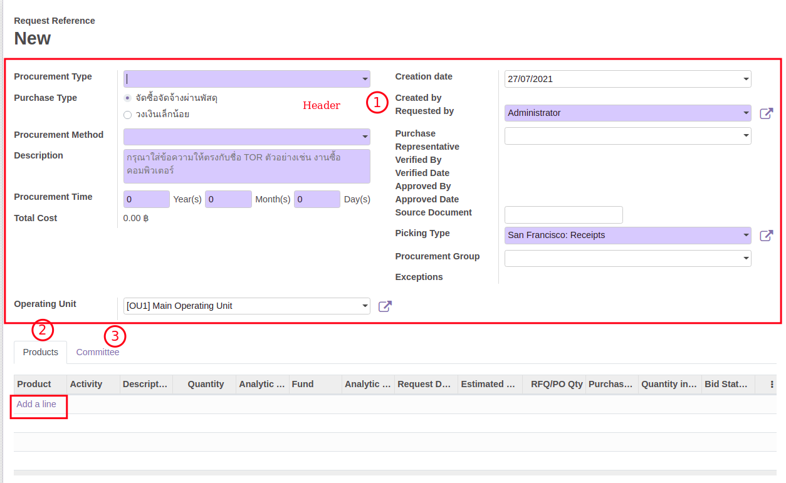
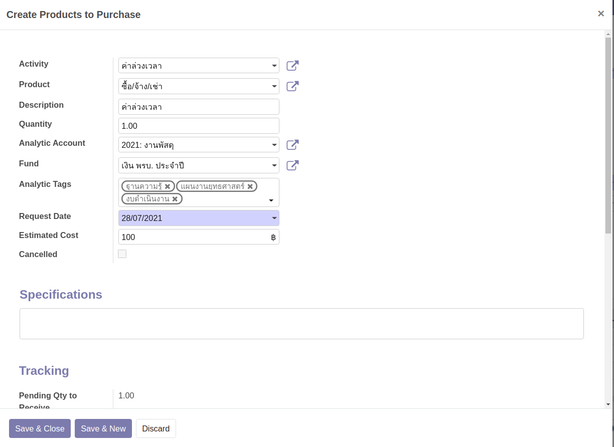
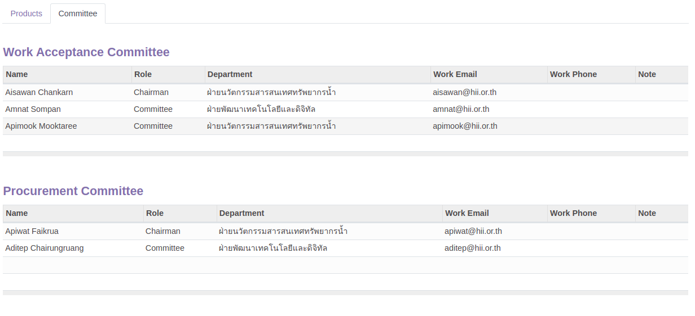
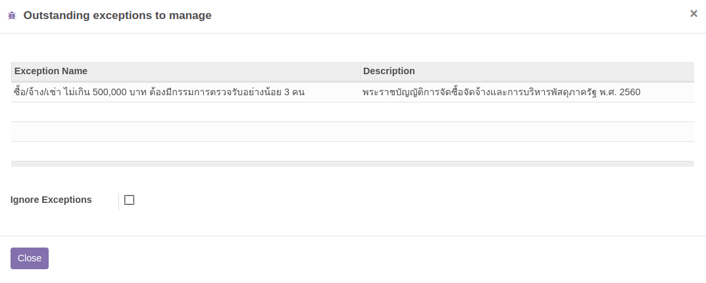
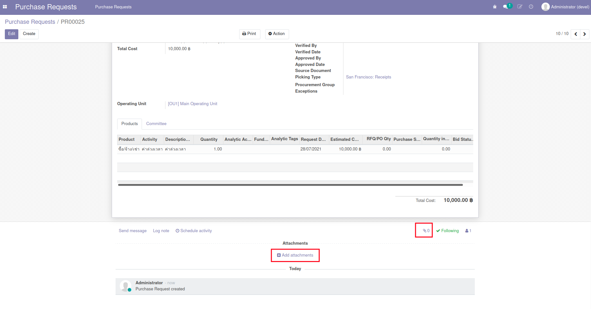
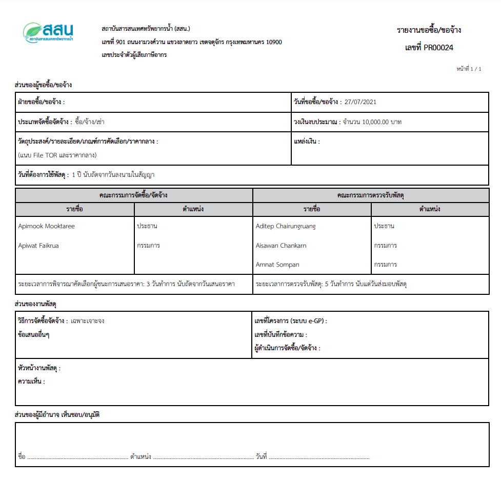
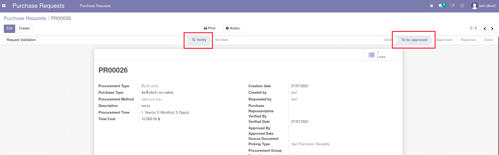

กระบวนการขอซื้อขอจ้าง (Purchase Request)#
เอกสารนี้สำหรับ :: ผู้ขอจัดซื้อจัดจ้าง (Employee)
การสร้างใบขอซื้อจ้าง (Purchase Request:PR)#
Menu :: Purchase Requests > Purchase Requests > Purchase Requests

-
กดปุ่ม Create เพื่อสร้าง Purchase Request ที่ Header เลือก/กรอกข้อมูลดังนี้
- Procurement Type: ประเภทของการซื้อ
- ซื้อ/จ้าง/เช่า
- จ้างที่ปรึกษา
- จ้างก่อสร้าง
- Purchase Type: ระเบียบการ
- จัดซื้อจัดจ้างผ่านพัสดุ
- วงเงินเล็กน้อย
- Procurement Method: วิธีการจัดซื้อจัดจ้าง
- เฉพาะเจาะจง
- คัดเลือก
- ประกาศเชิญชวนทั่วไป e-bidding
- ประกาศเชิญชวนทั่วไป e-market
- Description: รายละเอียดของการจัดซื้อ
- Procurement Time: ระยะเวลาการดำเนินการ
- Total Cost: วงเงินรวม
- Creation Date: วันที่สร้างเอกสาร
- Created By: ผู้สร้างเอกสาร
- Requested By: ผู้ขอ (อาจไม่ใช่ผู้สร้างเอกสาร กรณีทำแทน)
- Purchase Representative: เจ้าพนักงานจัดซื้อจัดจ้างที่ได้รับมอบหมาย
- Verified By: ผู้ตรวจสอบเอกสาร (หัวหน้าเจ้าพนักงานจัดซื้อจัดจ้าง)
- Verified Date: วันที่ตรวจสอบเอกสาร
- Approved By: ผู้อนุมัติวงเงิน (คนสุดท้ายในลำดับการอนุมัติ)
- Approved Date: วันที่อนุมัติวงเงิน
- Procurement Type: ประเภทของการซื้อ
-
แท็บ Product เพิ่มรายการที่ต้องการขอซื้อขอจ้าง โดยมีข้อมูลดังนี้
- Activity: เนื้องานที่ต้องการขอซื้อจ้าง
- Description: รายละเอียดเพิ่มเติมการขอซื้อจ้าง
- Quantity: จำนวนที่ต้องการ
- Analytic Account: ชื่อโครงการหรือชื่อหน่วยงานที่ต้องการใช้งบประมาณ
- Fund: ชื่อแหล่งทุนของโครงการหรือหน่วยงานที่ใช้งบประมาณ
- Analytic Tags: ข้อมูลกลุ่มงบประมาณ, แผนงาน, ประเภทงบประมาณ
- Requested Date: วันที่ต้องการ
- Estimated Cost: งบประมาณ

-
แท็บ Committee รายชื่อคณะกรรมการ เงื่อนไขเป็นไปตามจำนวนเงินรวม และข้อมูลการจัดซื้อจัดจ้างต่างๆ Procurement Type, Purchase type และ Procurement method ให้เพิ่มรายชื่อคณะกรรมการการจัดซื้อจัดจ้างและคณะกรรมการการตรวจรับ (Committee) ตาม พ.ร.บ. โดยมีข้อกำหนดดังต่อไปนี้

Note
- หากจำนวนคณะกรรมการไม่สอดคล้องกับเกณฑ์ พ.ร.บ. ระบบจะออกคำเตือนเมื่อกดปุ่ม Request Approval ดังตัวอย่างเช่น

-
หากมีข้อมูลแนบเพื่อการพิจารณาสามารถเพิ่มได้ที่ รูปคลิป ด้านล่างของเอกสาร

-
กดปุ่ม Print - Purchase Request เพื่อตรวจสอบความถูกต้อง

-
กดปุ่ม Request Approval เพื่อส่งเอกสาร Purchase Request นี้ไปยังฝ่ายพัสดุเพื่อตรวจทานและส่งอนุมัติการจัดซื้อจัดจ้างและการเบิกใช้งบประมาณต่อไป
- Substate = To Verify
- State = To be approved

End.